일본 온천여행의 성지
큐슈
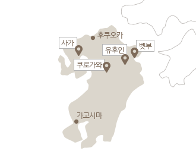
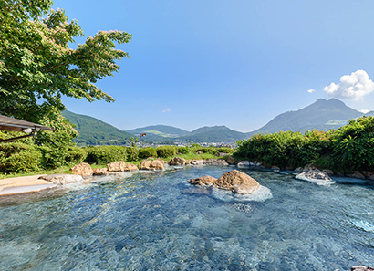
여성 선호 인기 온천마을 1위!
유후인
큐슈의 온천마을 중 아기자기한 볼거리가 많은 유후인!
개성만점 맛집, 잡화점, 캐릭터숍들이 가득해 지루할 틈이 없다.
유후다케 산의 전망 노천온천은 묵은 피로까지 해소시켜준다!
관련 상품 보기
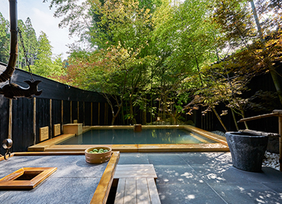
고즈넉한 숲속의 노천탕 온천마을
쿠로가와
해발 1,000m 고지 조용한 산 속 온천마을 쿠로가와.
당일 입욕은 물론, 전통과 개성을 자랑하는 료칸이 빼곡하다.
유카타를 입고 온천장을 찾아다니는 것도 빼놓을 수 없는 재미!
관련 상품 보기
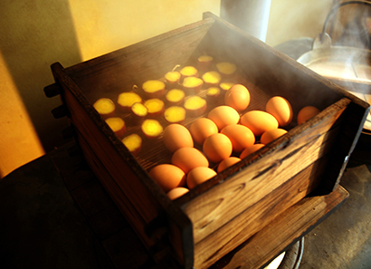
알고보면 천국같은 지옥 온천
벳부
일본에서 가장 많은 원천과 용출량을 자랑하는 벳부.
단돈 100엔 밖에 안 하는 당일 입욕 온천도 100곳이 넘는다.
8개의 지옥 온천 순례를 하며 온천수로 익힌 달걀과 푸딩은 별미!
관련 상품 보기
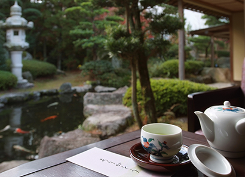
힐링과 맛이 가득한 온천의 고장
사가
피부를 아름답게 하는 일본 3대 미인온천 '우레시노'
1,300년 역사의 유서 깊은 온천마을 '다케오'
최고의 항구도시 '가라쓰' 등 일본 료칸 여행의 정수를 느껴보자.
관련 상품 보기
천 년의 고도, 전통의 고즈적한 온천마을
간사이·츄부
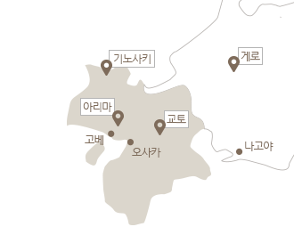
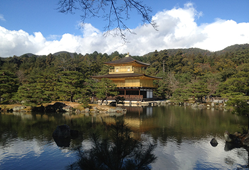
옛 일본의 정취와 고풍스러움이 가득한 도시
교토
옛 귀족의 풍류 넘치는 풍경이 좋은 휴양지 '아라시야마'
일본에서 가장 넓고 가장 오래된 비와호(湖)를 바라보며 즐기는 온천욕
일본 역사의 중심, 천년 고도 교토에서 만끽하는 힐링 여행
관련 상품 보기
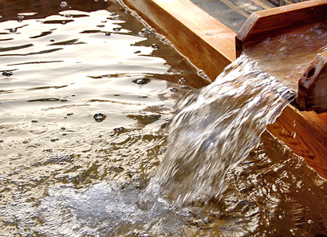
3,000년 역사의 일본 3대 온천
아리마
일왕의 휴식처로도 알려진 명탕중의 명탕 아리마!
혈액순환과 관절에 좋은 은탕, 피부 미용에 좋은 금탕과 함께
조용하고 소박한 온천마을이 주는 즐거움에 빠져보자
관련 상품 보기
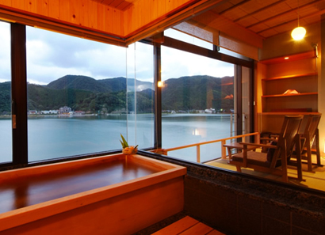
최고의 전망과 온천순례가 가능
기노사키
아름다운 자연과 전통목재로 지어진 료칸들이 즐비한 기노사키.
온천 순례 ‘소토유메구리’를 즐기며 미슐랭 그린가이드에 선정된 전망을
감상하고, 각각 다른 온천수의 효능과 테마를 즐겨보자!
관련 상품 보기
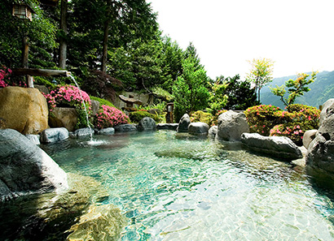
전설 속의 온천마을
게로
백로가 날아와 앉은 자리에서 온천수가 솟아져 나와 지금의 온천장이
되었다는 전설 속의 온천마을, 일본 3대 온천 게로.
천황이 즐겨찾았다는 전망좋은 노천탕에서 제대로 신선놀음을 즐겨보자.
관련 상품 보기
역사와 전통을 자랑하는 각기 다른 개성의 온천체험
간토
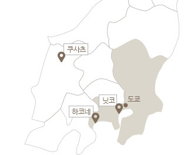
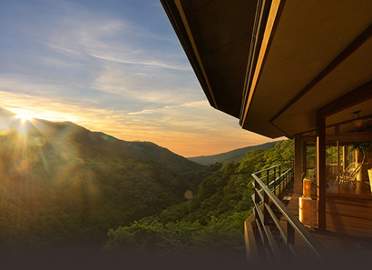
일본 대표 온천마을 No.1
하코네
매년 2,000만명 이상이 방문하는 일본 최대 온천마을!
도쿄에서 1시간이면 사계절 내내 아름다운 자연풍경 속 온천을 느낄 수 있다.
푸른 녹음속에서 질좋은 유황온천에 몸을 담궈 피로를 풀어보자.
관련 상품 보기
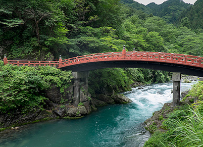
오랜 역사를 간직한 세계적인 관광지
닛코
세계문화유산으로 등재된 도쇼구를 비롯,
역사적 건축물과 풍부한 대자연의 품에 둘러싸인 닛코!
기누가와 온천은 기차로 1시간이면 접근 가능해
당일치기 관광지로도 추천한다.
관련 상품 보기
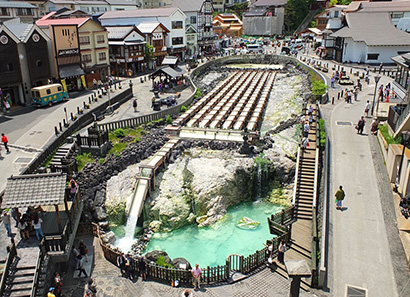
일본 제1의 용출량을 자랑하는 일본 최고의 명탕
쿠사츠
풍부한 유량과 뛰어난 치료효과를 보이는 온천수로 유명한 쿠사츠
특히 강한 유황과 피어오르는 온천 연기는 ‘유바다케’는 쿠사츠의 상징!
일본 제일의 풍부한 용출량을 자랑하는 세계 최대의 온천 마을을 경험해보자.
관련 상품 보기
낭만가득한 겨울왕국에서 즐기는 온천여행
홋카이도
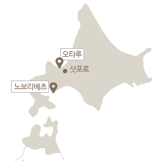
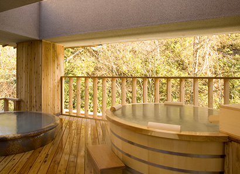
일본의 3대 지옥온천
노보리베츠
온천의 나라 일본을 대표하는 3대 지옥 온천 노보리베츠!
‘도깨비가 사는 지옥’을 연상시켜 더욱 유명하다. 다양한 수질을
자랑하는 노보리베츠로 온천 순례를 떠나보자!
관련 상품 보기
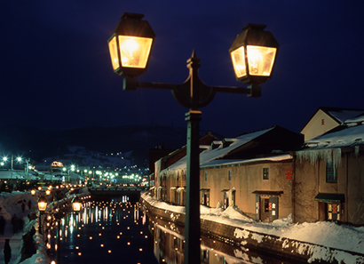
낭만적인 항구도시
오타루
낮에는 새하얀 눈이 덮인 설원의 모습, 밤에는 아름답게 반짝이는
운하의 모습을 모두 볼 수 있는 곳. 정취 있는 긴 운하를 따라 지어진
붉은색 벽돌의 건물들! 오타루에서 잊고 있던 감성을 깨워보자.
관련 상품 보기